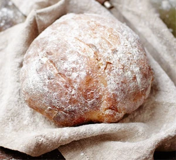

Sourdough

Description
Baking a loaf of this dense, chewy bread requires making a fermented 'starter' from flour, but it's worth the
effort.
Ingredients
- 300g sourdough starter
- 500g strong white flour
- 1 tsp fine salt
- 1 tbsp honey
Steps
- Tip the flour, 225ml warm water, salt, honey and starter into a large bowl. Stir with a wooden spoon until
combined, adding a little extra flour if too sticky or a little extra warm water if it's too dry.
- Tip onto a work surface and knead for about 10 minutes until soft and elastic. When ready the dough will
bounce back if gently pressed with a finger.
- Place the dough in a large, well-oiled bowl and cover with an oiled sheet of clingfilm. Leave in a warm
place for 3 hours.
- Line a medium sized bowl with a clean tea towel and flour it well. Tip the dough back onto your work surface
and knead briefly. Shape into a smooth ball and dust with flour. Place, seam side up, in the bowl, cover
with a sheet of oiled clingfilm and leave for 6-8 hours, until roughly doubled in size.
- Heat a large baking tray in the oven, set to 210C fan. Fill a small roasting tin with a little water and
place in the bottom of the oven to create some steam. Remove the large tray, sprinkle with flour then tip
the risen dough onto the tray. Bake for 35-40 mins until golden brown.
- Cool on a wire rack for 20 mins.